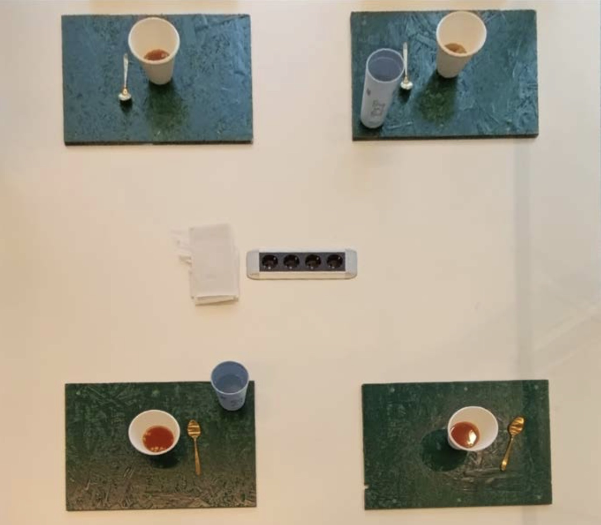
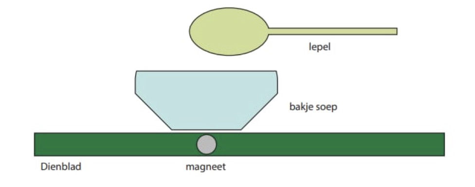

Souper Woman
Projectbeschrijving
Dit project laat het glazen plafond zien door middel van het eten van tomatensoep. Aan tafel zitten twee mannen en twee vrouwen soep te eten, waarbij het voor de vrouwen moeilijker is om de soep volledig op te eten vanwege een magneet onder het bakje dat de metalen lepel licht tegenhoudt. Dit staat symbool voor het feit dat vrouwen binnen bedrijven vaak moeilijker aan hogere functies kunnen komen dan mannen.
Mijn rol
Binnen dit project heb ik me bezig gehouden met de research naar gender ongelijkheid en het glazen plafond, en heb ik mee bedacht hoe dit vertaald kon worden naar een eetbaar verhaal.



